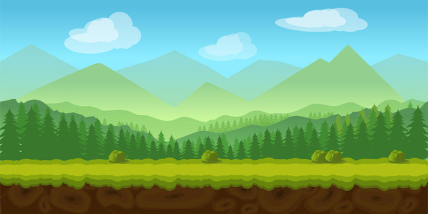
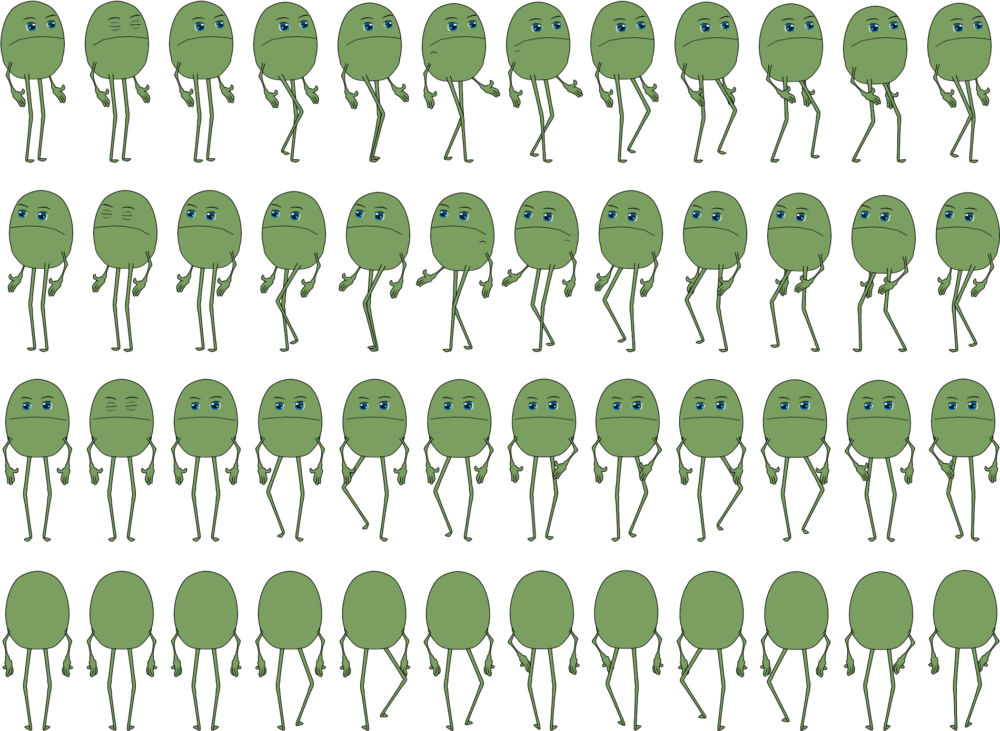
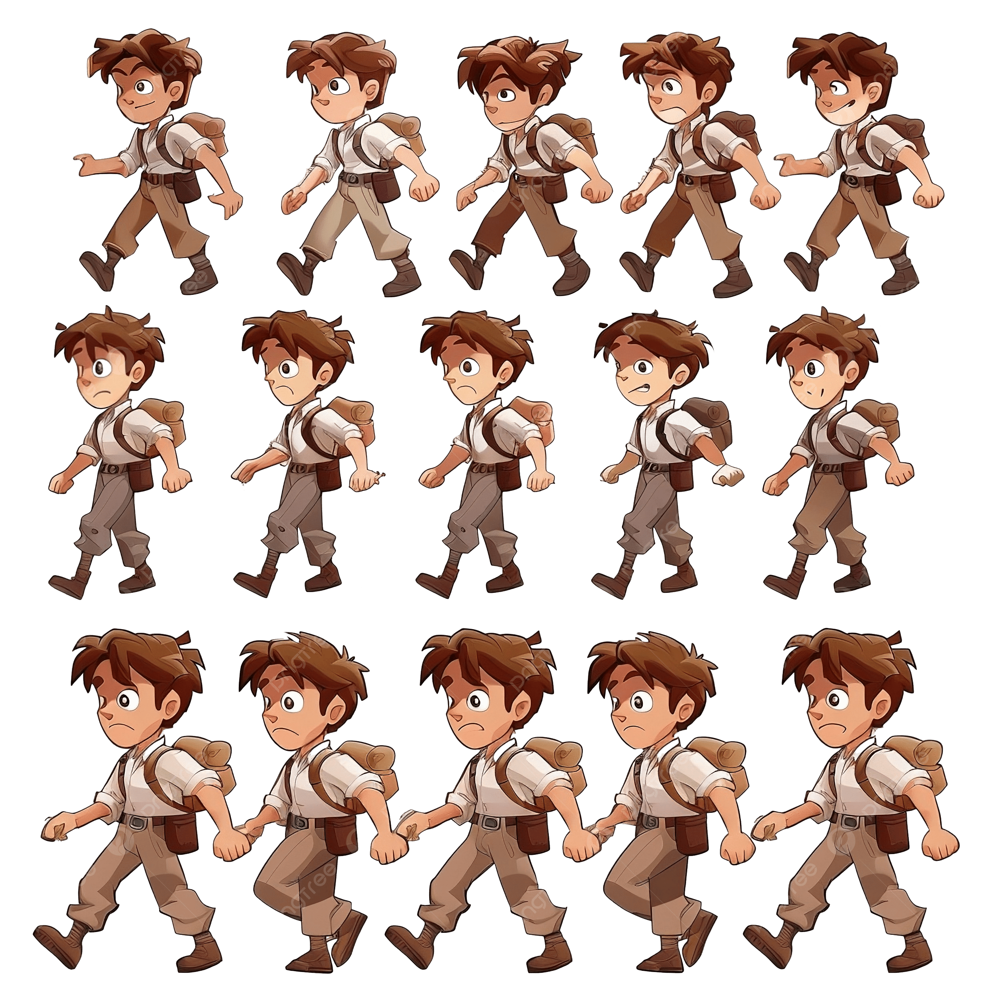

SampleScene
Contains the queue prototype controller. GameManager creates the floor, counter, slots, NPCs, player, and HUD at runtime.
Game World
The world is intentionally small: a counter, a queue, strangers nearby, and a player trying to move forward before time runs out.
Visual Direction



Unity Implementation
Contains the queue prototype controller. GameManager creates the floor, counter, slots, NPCs, player, and HUD at runtime.
Tests character movement, sprite animation, Rigidbody2D behavior, and Cinemachine camera setup.
Current visual references live in Assets/Sprits/, with GreenGuy animation clips and controller in Assets/Animations/.